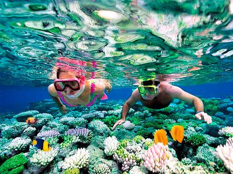
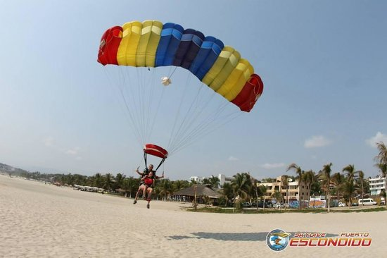
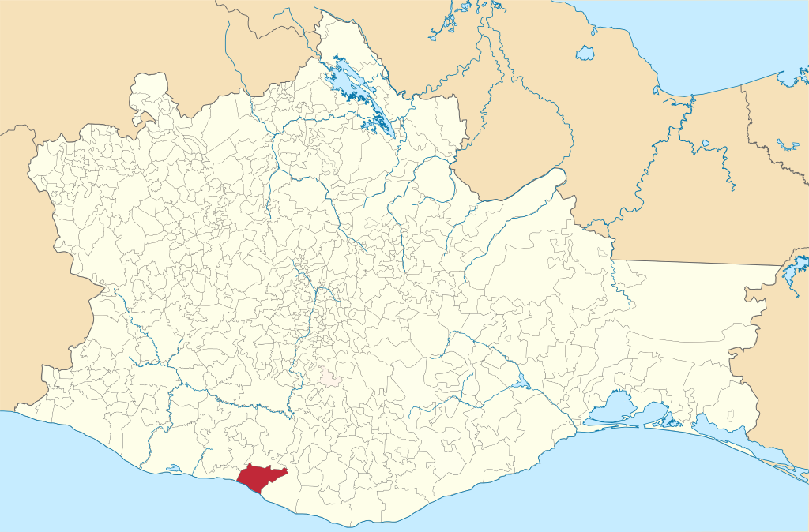
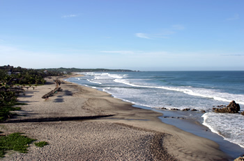
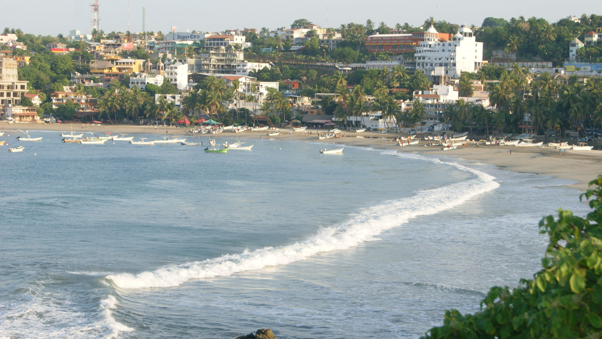
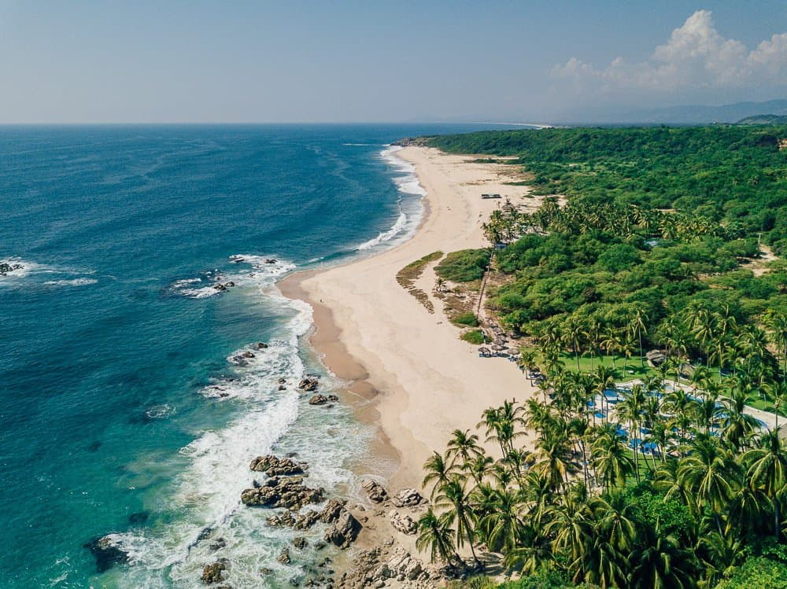
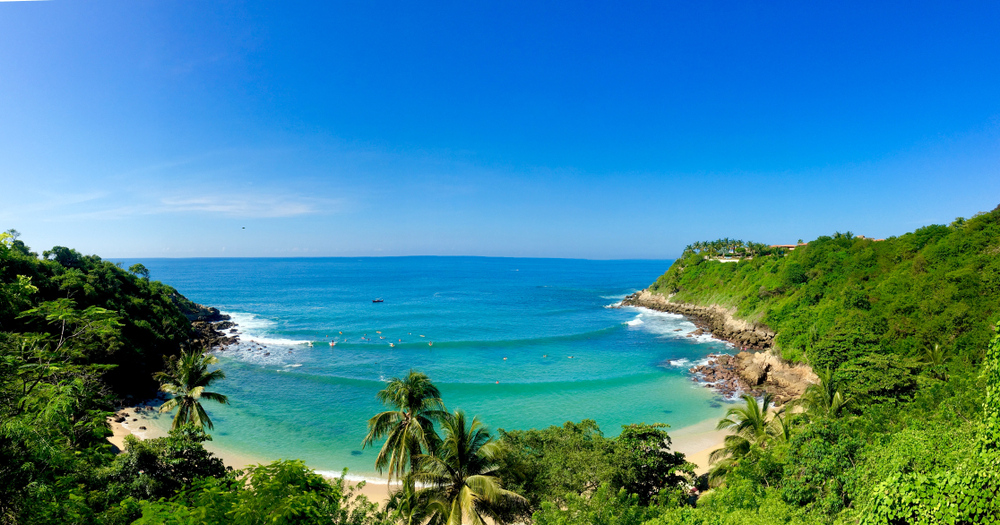
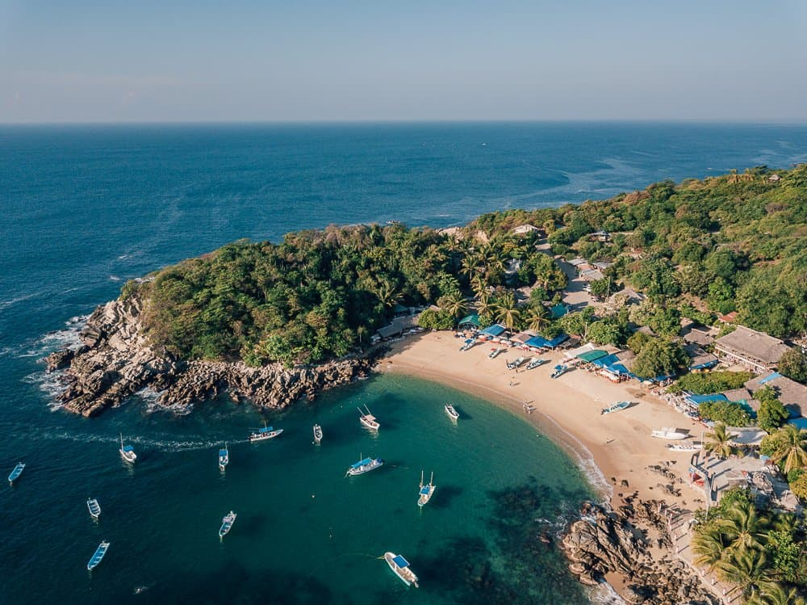
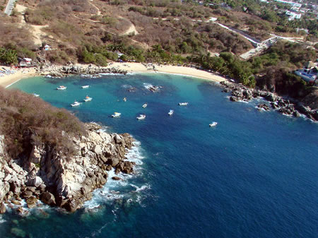

Puerto escondido es una ciudad y puerto mexicano que cuenta con numerosas playas y una animada vida nocturna. Podemos realizar surf, ecoturismo, liberacion de tortugas, Snorkelear y salto en paracaidas, como tambien disfrutar de su calido clima y hermosas playas.
 
El estado de Oaxaca. En el municipio de San Pedro Mixtepec -Distrito 22.

Cuenta con un clima cálido subhúmedo con una temperatura media anual de 27°C, humedad relativa de 84 %.siendo la temporada de lluvias de mayo a noviembre.
Playa Zicatela
Playa Bahia Principal
Playa Bacocho
PLaya Carizalillo
Playa Puerto Angelito
Playa Manzanillo
